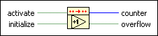

Increment PtByPt VI
Owning Palette: Other Functions PtByPt VIs
Requires: Full Development System
Increments counter by one each time the VI is called when activate is set to TRUE.
This VI is similar to the Increment function.
 | Note By default, reentrant execution is enabled in all Point By Point VIs. |

 Add to the block diagram Add to the block diagram |
 Find on the palette Find on the palette |